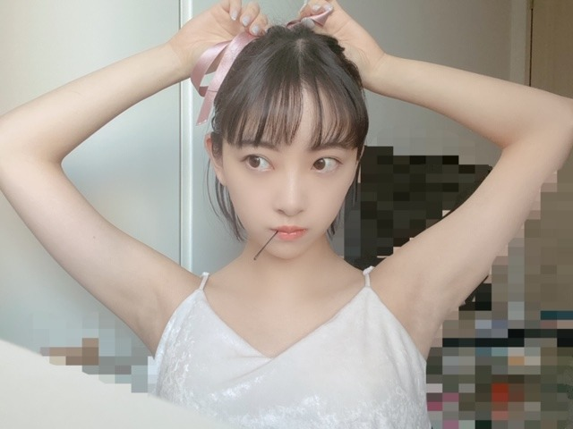
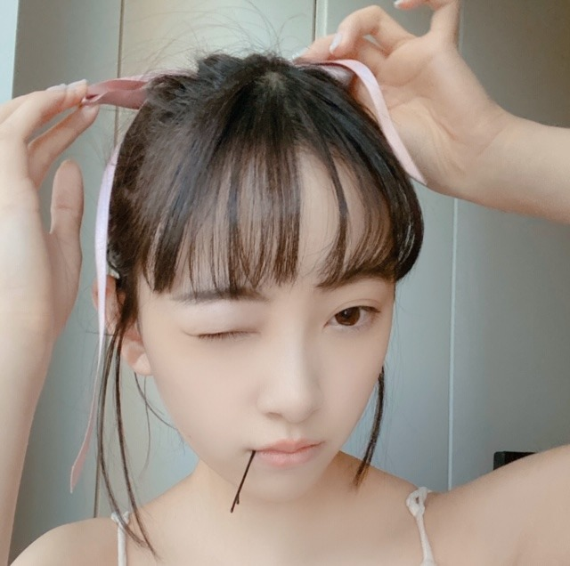
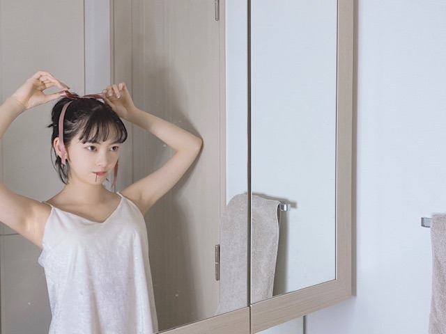

2020/0507Thu海がきこえる
私の大好きなジブリ作品の1つでもある
" 海がきこえる "
一ヶ月に一回は必ず見たくなるんです
他の作品とは違うヒューマンドラマ感
主人公の女の子男の子の複雑な心境のリアルさ
絵の淡さ サントラ
全部全部すきでして
まさに" エモい "です
そんな海がきこえるのヒロインである
武藤里伽子ちゃんが部屋で
髪を結んで支度しているシーンが大好きで
再現してみました〜


わかる方いるかな...？
夏の始まり 夏 夏の終わり
に見たくなります
いや、夏は毎日見てたいくらいですね

撮影者：姉
サントラだと
ファーストインプレッション
少女の想い
がすきです
このドラマ、アニメ、映画の
このシーン再現してほしい!
というのありますかね〜？
もしあったら教えてください☺︎
画像付きだとわかりやすいです!
#未央奈に再現してほしい
お待ちしてまーす!
ではではは
2020/05/07 20:36
コメント(408)
みおたんきゃわたん(^-^)
初めての投稿です。海が聞こえる、私もお気に入りです。続編のアイがあるからも好きです。堀さんには、お風呂で寝る人なんだよのセリフをやってほしい。
可愛い❤️だけど風邪無いようにね写真集
楽しみです‼️
楽しみです‼️
No46#お家でドームでしたね
って46って最高数字
って46って最高数字
未央奈お疲れ様(*´∀｀)ノ未央奈に再現して欲しいリクエストは同じジブリで僕は魔女の宅急便が好きです未央奈も何回何十回と観たと思うし画像は要らないと思うから貼らずに主人公のキキがほうきに跨ぐシーンお願いしますm(__)m出来たらでブラシでも大丈夫です
未央奈ちゃんブログ更新ありがと〜！
最近、未央奈ちゃんのブログを見るために1日頑張ってます！今日も朝から夜まで遠隔授業頑張ったよ、、
いろんなジブリ作品みたいな〜！
あ！ディズニー作品も見てみたい！白雪姫とか！お姫様系の未央奈ちゃんも可愛んやろな〜♡
#未央奈に再現してほしい
最近、未央奈ちゃんのブログを見るために1日頑張ってます！今日も朝から夜まで遠隔授業頑張ったよ、、
いろんなジブリ作品みたいな〜！
あ！ディズニー作品も見てみたい！白雪姫とか！お姫様系の未央奈ちゃんも可愛んやろな〜♡
#未央奈に再現してほしい
안녕하세요.
1日のブログをたまたま目にして、、、
ワナワンとアイユの名前があってとっても嬉しかったです。
オススメはポールキムとプロミス9。
JPOPだと、フレンズ、ハンブレッターズがオススメです。
是非聴いてみてください。
1日のブログをたまたま目にして、、、
ワナワンとアイユの名前があってとっても嬉しかったです。
オススメはポールキムとプロミス9。
JPOPだと、フレンズ、ハンブレッターズがオススメです。
是非聴いてみてください。
ブログ更新ありがとうございます！
写真集楽しみです！
お体に気をつけてお過ごしください！
写真集楽しみです！
お体に気をつけてお過ごしください！
未央奈ブログ更新ありがとーう！
自分の意見は魔女の宅急便のやつやって欲しいです、笑
また更新待っています！
自分の意見は魔女の宅急便のやつやって欲しいです、笑
また更新待っています！
こんばんは。
海がきこえるいいねー。
自分も好きです。
青春がつまってるね。
高知弁や高知の雰囲気好きー。
ロケ地巡りしたいw
海がきこえるいいねー。
自分も好きです。
青春がつまってるね。
高知弁や高知の雰囲気好きー。
ロケ地巡りしたいw
未央奈ぁぁぁぁぁ～～～。
トトロの真似、お願いしま～～～す。
ハハハハのは。
トトロの真似、お願いしま～～～す。
ハハハハのは。
未央奈に、再現して欲しいもの。
サマーウォーズの
「よろしくおねがいしまぁぁぁぁぁぁぁぁぁぁぁす！」
サマーウォーズの
「よろしくおねがいしまぁぁぁぁぁぁぁぁぁぁぁす！」
未央奈ブログ更新ありがとー！
「やな奴！」が見たい！！
「やな奴！」が見たい！！
うおー
今日の堀ちゃんはまた一段と可愛いですねー
白が似合いますね～～～！
今日の堀ちゃんはまた一段と可愛いですねー
白が似合いますね～～～！
キキみたいなリボン付けてる女の子すきです！♡
追加コメです。
サントラ聴いてきました。
どの曲だったけ？とおもって聴いたら
どっちもめちゃ良かった。素敵な曲名ね。
音楽ってメロディとか聴いたら思い出すから凄いね。
久々にまた見てみるね。
サントラ聴いてきました。
どの曲だったけ？とおもって聴いたら
どっちもめちゃ良かった。素敵な曲名ね。
音楽ってメロディとか聴いたら思い出すから凄いね。
久々にまた見てみるね。
薬師丸ひろ子さん主演の映画
「ねらわれた学園」で峰岸徹さん
がやられていた役の再現ですね。
わからなかったらネット検索して
みてください。
「ねらわれた学園」で峰岸徹さん
がやられていた役の再現ですね。
わからなかったらネット検索して
みてください。
ライブ最終日終わったー最高やったなーなんか。みおなは見ててどうでしたか？
感想待ってます！
感想待ってます！
ひとりタイタニック
堀ちゃんに再現してほしいシーン
映画「500日のサマー」。思い出の丘でサマーとトムが最後の別れの言葉を交わすシーンかな、ズウイー・デシャネル。哀しいシーンなんですけどね。この映画は音楽も素晴らしいから、是非一度ご覧あれ
映画「500日のサマー」。思い出の丘でサマーとトムが最後の別れの言葉を交わすシーンかな、ズウイー・デシャネル。哀しいシーンなんですけどね。この映画は音楽も素晴らしいから、是非一度ご覧あれ
未央奈〜 ブログ更新ありがとう
応援しとるよー。
応援しとるよー。
3日間ライブ見ました。
本当に凄く楽しませてもらいました！
ありがとう！本当にありがとう！！
ライブを見て改めて乃木坂を好きになって良かったなと心の底から思いました。
ずっとずっと大好きです！！
本当に凄く楽しませてもらいました！
ありがとう！本当にありがとう！！
ライブを見て改めて乃木坂を好きになって良かったなと心の底から思いました。
ずっとずっと大好きです！！
こんばんわわわʕ•ᴥ•ʔ
みおにゃたんかわいいっ❤︎
今日も癒される(*´꒳`*)
大好き〜✿('▽'✿）
みおにゃたんかわいいっ❤︎
今日も癒される(*´꒳`*)
大好き〜✿('▽'✿）
海がきこえる今はstayhomeだから見てるよ！
お姉さんと同居しているのですね！！
仲はいいですか？！
お姉さんと同居しているのですね！！
仲はいいですか？！
堀ちゃんお疲れ様〜
海がきこえる、恥ずかしながら初耳です。ジブリはポニョ、天空の城ラピュタとかよくテレビで放送されるやつしか分かんないです。海がきこえる見てみます！！
海がきこえる、恥ずかしながら初耳です。ジブリはポニョ、天空の城ラピュタとかよくテレビで放送されるやつしか分かんないです。海がきこえる見てみます！！
更新ありがとうございます！
真夏の全国ツアーinTOKYO
とても感動しました。
未央奈ちゃんのスピーチから涙が止まりませんでした。
他のメンバーに負けないくらい努力してる。辛い時もあったけど、ファンに辛い表情を一切見せない。
盛り上げ上手で可愛くて綺麗で何もかもが完璧な未央奈ちゃん。生まれて来てくれてありがとう。みんなを笑顔にしてくれてありがとう。私と未央奈ちゃんは遠い存在かもしれない。でも…。精一杯応援したい。未央奈ちゃんに届くくらいに。ずっと大好きです☺︎
海がきこえる 私好きなので嬉しいです☺︎
良かったら、ジブリ作品の「コクリコ坂から」のメルちゃん見てみたいです！
三つ編みの可愛いやつです！
#未央奈に再現してほしい
真夏の全国ツアーinTOKYO
とても感動しました。
未央奈ちゃんのスピーチから涙が止まりませんでした。
他のメンバーに負けないくらい努力してる。辛い時もあったけど、ファンに辛い表情を一切見せない。
盛り上げ上手で可愛くて綺麗で何もかもが完璧な未央奈ちゃん。生まれて来てくれてありがとう。みんなを笑顔にしてくれてありがとう。私と未央奈ちゃんは遠い存在かもしれない。でも…。精一杯応援したい。未央奈ちゃんに届くくらいに。ずっと大好きです☺︎
海がきこえる 私好きなので嬉しいです☺︎
良かったら、ジブリ作品の「コクリコ坂から」のメルちゃん見てみたいです！
三つ編みの可愛いやつです！
#未央奈に再現してほしい
海がきこえるわたしもだいすきです。
1枚目そっくりすぎてびっくり。
かわいい…❤︎
1枚目そっくりすぎてびっくり。
かわいい…❤︎
千と千尋の神隠しの
千尋が泥だんご食べてるところ再現してほしーなーww
千尋が泥だんご食べてるところ再現してほしーなーww
ブログ更新ありがとう！
毎日、嬉しいよ。
今日はまたいつもと違った感じで楽しいですよ。
めっちゃかわいいです！
自分もジブリ好きなんで
#未央奈に再現してほしい で画像つけました
もしできたらお願いします！ジブリです。
では〜
毎日、嬉しいよ。
今日はまたいつもと違った感じで楽しいですよ。
めっちゃかわいいです！
自分もジブリ好きなんで
#未央奈に再現してほしい で画像つけました
もしできたらお願いします！ジブリです。
では〜
未央奈さん、2th写真集のタイトルが情報解禁になりましたね。
ジブリ作品ヒロインの再現、とても綺麗に仕上がりましたね。
しかしさすが女性誌モデルされてるから、家での撮影とは思えないほど見事な出来ですね。
(^_^)
CRYSTALより。
ジブリ作品ヒロインの再現、とても綺麗に仕上がりましたね。
しかしさすが女性誌モデルされてるから、家での撮影とは思えないほど見事な出来ですね。
(^_^)
CRYSTALより。
＃未央奈に再現してほしい
"魔女の宅急便"の女の子が、
ほうきで空を飛ぶシ―ン♪
"センター"に立った強み、
忘れないで。
＃ショートヘアの未央奈が好き☆
"魔女の宅急便"の女の子が、
ほうきで空を飛ぶシ―ン♪
"センター"に立った強み、
忘れないで。
＃ショートヘアの未央奈が好き☆
こんばんは。ブログ更新ありがとうございます。
私はドラマもアニメも30分番組ばかり見ているので、あまり詳しくはないですが、アニメの定番、「女子高生がトーストをくわえてダッシュ」のシーンは、一度は実写化して欲しいです。
あつ森の売り上げが1100万本を超えたそうですが、未央奈ちゃんの島の開発は進んでますか？
ではまた。
私はドラマもアニメも30分番組ばかり見ているので、あまり詳しくはないですが、アニメの定番、「女子高生がトーストをくわえてダッシュ」のシーンは、一度は実写化して欲しいです。
あつ森の売り上げが1100万本を超えたそうですが、未央奈ちゃんの島の開発は進んでますか？
ではまた。
ほんとにブログ見るのが楽しみです
ブログ更新ありがとう！
海がきこえる、まだ観たことないんだよなぁ…
今度見るね！
リボンを結ぶ堀ちゃん可愛い！
乃木坂46東京ドームライブの配信観たよ！
何度見ても良いライブだね！
MCコーナーでの堀ちゃんのコメント、現地でも聴いてたけど、本当に良かった！感動したし、あぁ本当に好きだなぁ…ずっと応援していこう！って改めて思ったよ！
海がきこえる、まだ観たことないんだよなぁ…
今度見るね！
リボンを結ぶ堀ちゃん可愛い！
乃木坂46東京ドームライブの配信観たよ！
何度見ても良いライブだね！
MCコーナーでの堀ちゃんのコメント、現地でも聴いてたけど、本当に良かった！感動したし、あぁ本当に好きだなぁ…ずっと応援していこう！って改めて思ったよ！
ライブ拝見してめっちゃ感動しました！
4枚目と5枚目の写真はタオルがかかってるかかかってないかの間違い探しもはいってますか？
「かぐや姫の物語」のかぐや姫とか似合いそうですね。
髪を結んでる再現度高いですね！とっても素敵です！
4枚目と5枚目の写真はタオルがかかってるかかかってないかの間違い探しもはいってますか？
「かぐや姫の物語」のかぐや姫とか似合いそうですね。
髪を結んでる再現度高いですね！とっても素敵です！
堀さん、こんばんは。
ジブリ映画・堀さん・再現という三題噺で思い起こすのは、『魔女の宅急便』の最初から、あるいは『耳をすませば』の「やなヤツ！ やなヤツやなヤツ！」などがありますが、やはり一番インパクトがあったのは『乃木坂って、どこ？』で日村さんと一緒に演じた『千と千尋の神隠し』の腐れ神様と千尋のシーンでしょう（笑）。堀さんの「ギャー！」が懐かしい（笑笑）。
#未央奈に再現してほしい
『風の谷のナウシカ』のラストの「その者青き衣を纏いて金色の野に降りたつべし」のシーンをぜひ。衣装が難しいかもしれませんが、ナウシカの凛とした様子は堀さんに合うと思います。
ではまたコメントしますね。おやすみおな。
さらばだ、また会おう！（気球に乗って去りぬ〜）
ジブリ映画・堀さん・再現という三題噺で思い起こすのは、『魔女の宅急便』の最初から、あるいは『耳をすませば』の「やなヤツ！ やなヤツやなヤツ！」などがありますが、やはり一番インパクトがあったのは『乃木坂って、どこ？』で日村さんと一緒に演じた『千と千尋の神隠し』の腐れ神様と千尋のシーンでしょう（笑）。堀さんの「ギャー！」が懐かしい（笑笑）。
#未央奈に再現してほしい
『風の谷のナウシカ』のラストの「その者青き衣を纏いて金色の野に降りたつべし」のシーンをぜひ。衣装が難しいかもしれませんが、ナウシカの凛とした様子は堀さんに合うと思います。
ではまたコメントしますね。おやすみおな。
さらばだ、また会おう！（気球に乗って去りぬ〜）
ブログ更新ありがとうございます！
僕は『あの頃、君を追いかけた』というドラマにめっちゃ
ハマったので再現してほしいです！
体調には気をつけてください！
ブログの更新楽しみに待ってます！
僕は『あの頃、君を追いかけた』というドラマにめっちゃ
ハマったので再現してほしいです！
体調には気をつけてください！
ブログの更新楽しみに待ってます！
こんにちは。海がきこえるは本当素晴らしいですよね。名作ですよね。
未央奈さんがオススメする映画は好きなものが多いし、見てみたいと思うものも多くて、映画好きとしては刺さってるので、是非またオススメ下さい！写真集のオードリーヘップバーンの写真も楽しみにしてますね。
未央奈さんは色白でボブで素敵な雰囲気なので、定番ですが、「レオン」のマチルダとかハマりそうですね！
#未央奈に再現してほしい
未央奈さんがオススメする映画は好きなものが多いし、見てみたいと思うものも多くて、映画好きとしては刺さってるので、是非またオススメ下さい！写真集のオードリーヘップバーンの写真も楽しみにしてますね。
未央奈さんは色白でボブで素敵な雰囲気なので、定番ですが、「レオン」のマチルダとかハマりそうですね！
#未央奈に再現してほしい
「海がきこえる」、、、
自分の人生に大きな影響を与えたアニメですね。
大げさかもしれませんが、中学生の頃にこれを観てからというもの、高知への憧れがずっとずっと心の片隅にあって、実際に住んでみました(笑)
戻ってきてから随分と経ちますが、あのときの不安やドキドキ、景色の美しさ、経験したことの一つ一つが今でも大切な思い出、糧となって残っています。
久しく観ていないので、週末に鑑賞してみます。
素敵なきっかけをくれた里伽子さん、ありがとう
自分の人生に大きな影響を与えたアニメですね。
大げさかもしれませんが、中学生の頃にこれを観てからというもの、高知への憧れがずっとずっと心の片隅にあって、実際に住んでみました(笑)
戻ってきてから随分と経ちますが、あのときの不安やドキドキ、景色の美しさ、経験したことの一つ一つが今でも大切な思い出、糧となって残っています。
久しく観ていないので、週末に鑑賞してみます。
素敵なきっかけをくれた里伽子さん、ありがとう
5/7 22:00配信の乃木坂46東京ドームライブ2017
も観たよー！ 2日間ともとても楽しめた！！
乃木坂のコンサートも行きたいな
このときの未央奈ちゃんもショーヘアだったんだね！
とても可愛いよ
#未央奈に再現してほしい
大型客船の甲板でローズが立っているところをジャックが
後ろから抱くシーンを再現して欲しい(レオナルド・ディカプリオ主演のタイタニック)
ではは
も観たよー！ 2日間ともとても楽しめた！！
乃木坂のコンサートも行きたいな
このときの未央奈ちゃんもショーヘアだったんだね！
とても可愛いよ
#未央奈に再現してほしい
大型客船の甲板でローズが立っているところをジャックが
後ろから抱くシーンを再現して欲しい(レオナルド・ディカプリオ主演のタイタニック)
ではは
更新ありがとう！
ヤッホー未央奈ブログありがとードームライブ観てたけどやっぱり未央奈最高 ⤴️⤴️お姉さんのカメラアングル良い感じです。今日２ヶ月の巣籠もりから出て関ヶ原に行って来ました❗空気がきれいで親戚も元気安心して帰って来ました❗岐阜早く帰れるといいですねー❗体に気配りしてもう少し辛抱してくださいね❗
こんばんは！
個人的にNARUTOが好きなのでNARUTOのシーンを何か再現してくれたら嬉しいです！！！！！！！( ≧∀≦)ノ
個人的にNARUTOが好きなのでNARUTOのシーンを何か再現してくれたら嬉しいです！！！！！！！( ≧∀≦)ノ
未央奈ブログ更新ありがとうーーー
海がきこえる見たことないから見てみたいーー
めっちゃ写真可愛すぎるーー
今度個握とかその格好期待しとるーー
体調には気をつけてなーー
これからもずっと応援しとるよーー
海がきこえる見たことないから見てみたいーー
めっちゃ写真可愛すぎるーー
今度個握とかその格好期待しとるーー
体調には気をつけてなーー
これからもずっと応援しとるよーー
自分もジブリ結構好きな方だけど｢海がきこえる｣は初めて知りました。(；ﾟДﾟ)
自分も見てみたいと思いました。
ジブリの中だと自分は｢紅の豚｣とかが好きですね。v(*´>ω<｀*)v
自分も見てみたいと思いました。
ジブリの中だと自分は｢紅の豚｣とかが好きですね。v(*´>ω<｀*)v
『海がきこえる』は自分の地元が舞台の一つでもあるので、取り上げてもらえて嬉しいです。
堀ちゃんに再現してほしいシーン思い付いた！
となりのトトロでメイちゃんがまっくろくろすけを見つけて両方でパチンッとやって、捕まえたーって走り回るシーンの再現が見たい！です！
となりのトトロでメイちゃんがまっくろくろすけを見つけて両方でパチンッとやって、捕まえたーって走り回るシーンの再現が見たい！です！
頻繁にブログ上げてくれてありがとう。
ジブリは
ほぼ
『紅の豚』
リピートなのです。
久しぶりに
『ゴッドファーザー』を見まして
特にPartIIを見終わった時には
まるで
是枝監督の『誰も知らない』を見終わった
時のような
胸の締め付けを感じますね
「ファミリー」のお話なんですね
ところで。。。
アメリカには
未央奈さんがジブリ作品の真似をするように
『コッドファーザー』のワンシーン
の真似をするマニアがいるらしいですね
今夜は
『龍の歯医者』を見ながら
眠りに就くのです。。。
ほぼ
『紅の豚』
リピートなのです。
久しぶりに
『ゴッドファーザー』を見まして
特にPartIIを見終わった時には
まるで
是枝監督の『誰も知らない』を見終わった
時のような
胸の締め付けを感じますね
「ファミリー」のお話なんですね
ところで。。。
アメリカには
未央奈さんがジブリ作品の真似をするように
『コッドファーザー』のワンシーン
の真似をするマニアがいるらしいですね
今夜は
『龍の歯医者』を見ながら
眠りに就くのです。。。


今、東京ドーム見ながらコメント打ってるよぉ
未央奈が思いを聞いて思わず一緒に泣いちゃった事思いだした
未央奈大好きだよぉ～
あとでツイートもしますね
未央奈大好きやぁ～